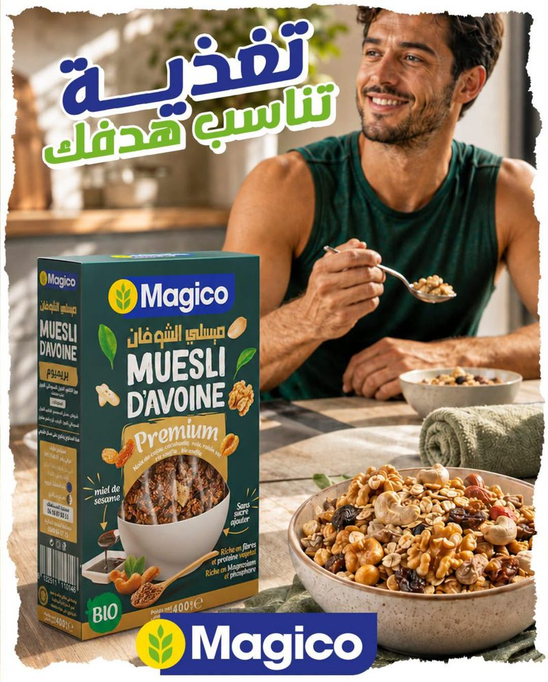

Le muesli d'avoineau miel de dattes.
Huit recettes en boîte de 400 g, en sachet de 1 kg et en pot de peanut butter. Fruits à coque, chocolat ou épices : un petit-déjeuner pour chaque objectif.
La gamme Magico
Chaque recette a sa fiche : ingrédients, formats et conseils. Cliquez sur un produit pour l'ouvrir.
Ce qu'on met
dans le bol.
Flocons d'avoine
La base de toutes les recettes de muesli Magico.
Miel de dattes
Il lie les flocons et apporte la douceur, à la place du sucre ajouté.
Fruits à coque
Noix, amandes, noisettes, cacahuètes et noix de cajou selon la recette.
Fibres et protéines
Les packs indiquent « riche en fibres, protéines, magnésium et phosphore ».
Mentions reprises des emballages. Gourmand est « sucre réduit » ; les autres recettes de muesli sont « sans sucre ajouté ».

Vu sur nos réseaux
Les dernières campagnes Magico sur Facebook et Instagram.
Une question ?
On vous répond.
Produits, points de vente ou partenariat : écrivez-nous ou appelez directement le bon service.